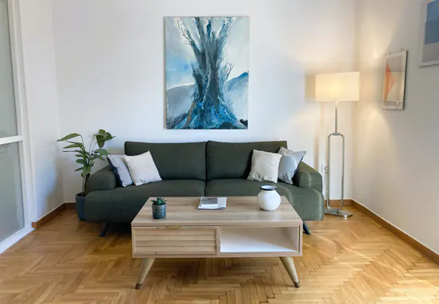
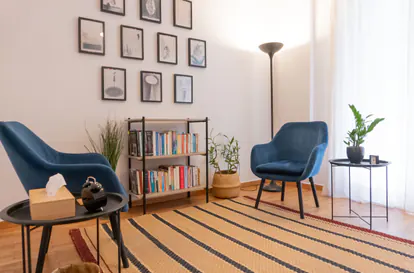
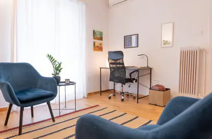
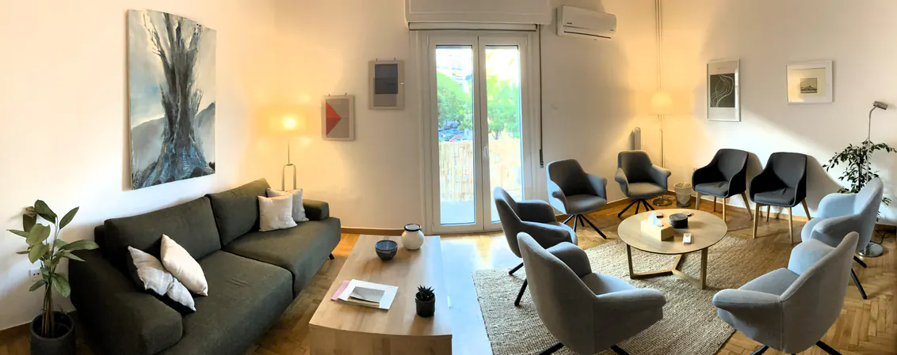
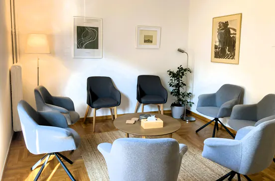

The sessions with Stelios were really nice and insightful. The process helped me look at my mental state, zoom out from just the current feeling and understand the background and the reasons behind it.
— KonstantinaSeven years down the line, having endured many hardships in my lifetime, I find myself living my life with an inner peace I never thought possible. This man is a healer and a soul whisperer.
— BarbaraI did not contact him for mental health counseling. Rather, I and he had conversations on philosophical meanings of life. Of course, I can see that he would be a good doctor for those who are struggling with conditions as well, as he is very professional and intelligent in his analysis.
— DaiStelios has created an environment that is inviting and sincere, open and most importantly, genuinely understanding. Our process is not quick, but it has been deliberate and thoughtful, and I have immense gratitude for the space he's created for me to both explore and express myself.
— BryanI have been working with Stelios for almost a year now. Our sessions have been extremely helpful and thanks to his empathetic, calm and insightful approach, I feel I have been able to make a lot of progress in little time.
— Nicolas